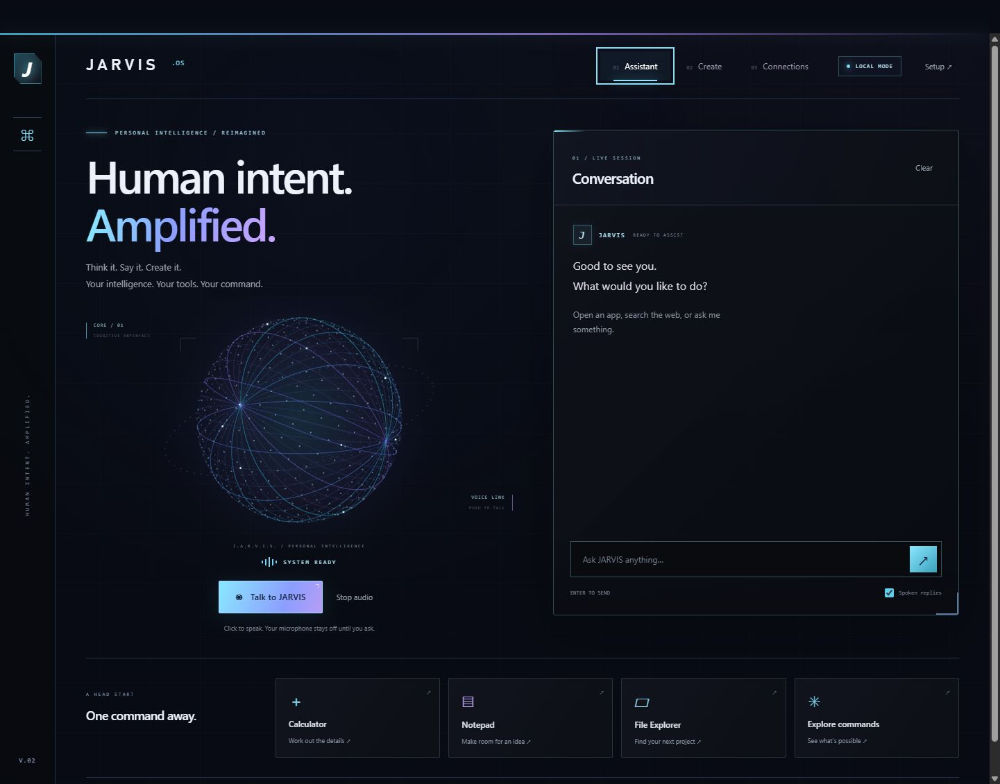
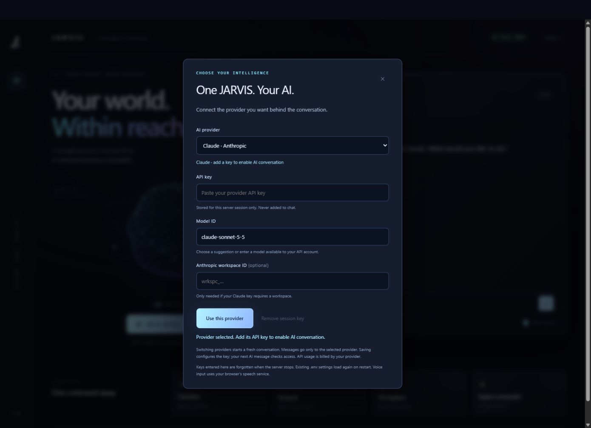
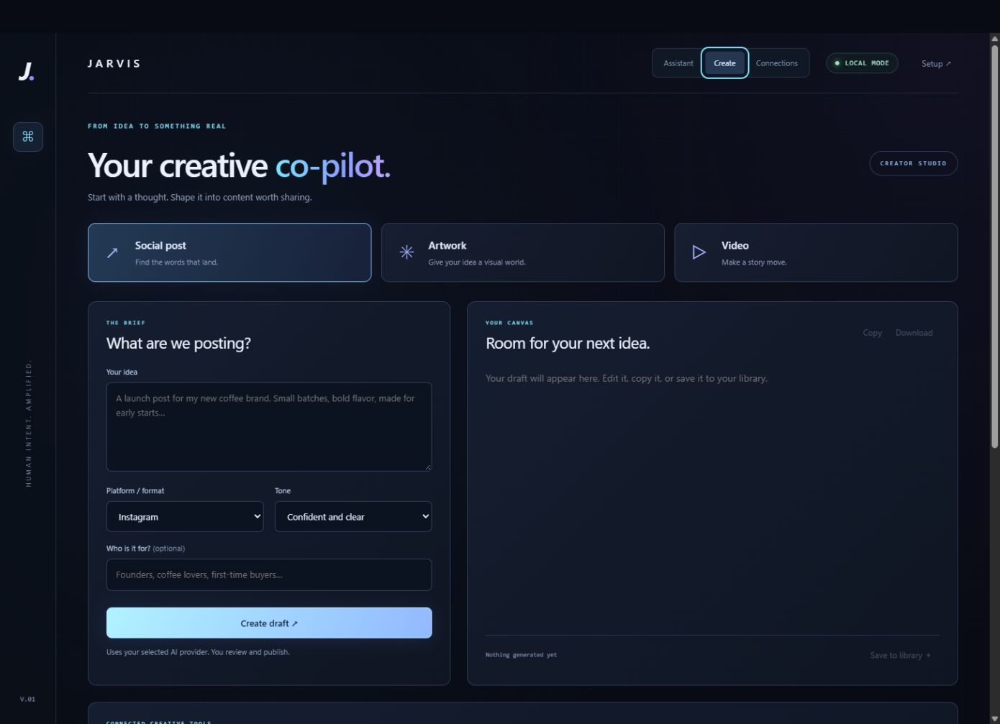

Any AI, your choice
OpenAI, Claude, Grok, or a local model through LM Studio. Switch any time, no restart.
▌ PERSONAL INTELLIGENCE / LOCAL FIRST
JARVIS is an AI assistant that lives on your Windows PC. Talk to it, build with it, create with it. Bring your own AI, or run everything offline.
v0.2 · Windows 10/11 · Python 3.10+ · free

01 / WHAT IT DOES
OpenAI, Claude, Grok, or a local model through LM Studio. Switch any time, no restart.
Click to talk. Speech recognition and natural Kokoro voices can run fully on your machine.
"Open notepad", "open GitHub", "what time is it". Quick commands, typed or spoken.
Draft social posts, artwork prompts and video briefs, then send them to connected tools.
A code editor with an OpenCode agent beside you, working in the project you pick.
Free local web search with SearXNG, plus a map view to explore a place and ask about it.

02 / YOUR INTELLIGENCE
Paste a key for the provider you already pay for, or point JARVIS at a model running in LM Studio and keep every word on your own hardware. Keys you save are encrypted with Windows and never sent to the browser.

03 / CREATE
Describe what you want to post, pick a tone and audience, and get a draft you can edit, copy, or save. Connect MCP services like Higgsfield or Canva to turn drafts into actual media. Nothing publishes on its own.
04 / INSTALL
Install Python 3.10 or newer. Tick "Add python.exe to PATH" during setup.
Grab the zip, unzip it anywhere you like, such as Documents\DreadOS-AI.
Double-click Start-JARVIS.cmd, then open http://127.0.0.1:8765 in Chrome or Edge. Open Setup to pick your AI.
> cd DreadOS-AI > python -m venv .venv-voice > .venv-voice\Scripts\pip install -r requirements-voice.txt > Start-DreadOS.cmd
After this, Start-DreadOS.cmd and Stop-DreadOS.cmd run JARVIS in the background with the Kokoro voice.
Install LM Studio, load a chat model and start its local server. In JARVIS Setup choose Local AI, enter http://127.0.0.1:1234/v1 and click Find local models.
05 / PRIVACY
127.0.0.1. Nothing is hosted in the cloud by us.data folder on your PC.